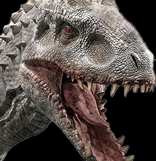

정보 페이지
등장공룡
-
 랩터
랩터

랩터
쥬라기 공원 시리즈에 등장하는 벨로키랍토르. 정식 명칭은 벨로시랩터 안 티로푸스 누블라렌시스/소르나엔시스 센수 파울(폴) (Nublarensis/Sornaensis sensu pal)로, 실제로 존재하지 않고 실제 벨 로키랍토르에서 이름만 빌려 쓴, 영화상에만 존재하는 가상의 종이다.작중 모습은 죽음의 화신이자 살인 기계 그 자체. 티라노사우루스 못지않게 강 렬한 인상을 남긴 공룡으로, 작중 티라노사우루스가 거대한 크기와 무지막 지한 괴력으로 인간이 범접할 수 없는 괴수와 같은 이미지를 보여주는 반 면, 랩터는 제이슨이나 에일리언 같은, 잔악무도한 슬래셔 영화의 살인마 적인 느낌이 강하다.[14] 요컨데 저항할 수 없을 정도는 아니지만 집요하 고 지능적이면서도 몸까지 날랜 추적자. -
 티라노사우르스
티라노사우르스

티라노사우르스
쥬라기 공원 시리즈에서 등장하는 티라노사우루스. 사실 쥬라기 공원이 개봉하기 전에도 티라노사우루스는 대중들에게 잘 알려진 공룡이었으나, 출현빈도가 비슷한 알로사우루스와 종종 혼동되곤 하였다. 그러나 쥬라기 공원을 계기로 티라노사우루스가 알로사우루스를 제치고 일약 스타로 발돋움하여 수많은 팬들을 양산시키고 지금의 '공룡의 대표주자'라는 자리에 있을 수 있게 되었다. 아예 이름만 따온 다른 공룡이라고 할 수 있는 벨로시랩터와 실제 벨로키랍토르만큼은 아니지만, 이 쪽도 실제 티라노사우루스와 어느 정도 차이점이 존재한다. 일단 인상부터 상당히 다른데, 쥬라기 공원 시리즈의 티라노사우루스는 실제 티라노사우루스보다 두개골이 짧고 둥글며, 주둥이도 길고 좁은 편인 실물보다 더 두껍다. 실제 티라노사우루스도 육식공룡들 중에서는 두개골이 굉장히 육중한 편
-
 트리케라톱스
트리케라톱스
트리케라톱스
중생대 백악기 후기, 약 6500만 년 전에 북아메리카에서 살았던 조반목의 각룡류 공룡의 한 속으로 속명의 뜻은 '3개의 뿔이 달린 얼굴'.몸길이는 약 7~9 m, 높이는 2.3~3 m 가량에 무게는 6~12 t으로 가장 큰 각룡 중 하나이며,[3] 미국의 와이오밍주와 몬태나주, 사우스다코타주, 콜로라도주, 캐나다의 앨버타주, 서스캐처원주 등지에서 화석이 발굴됐으며 얼굴을 두르는 프릴과 세개나 되는 뿔이란 독특한 외모가 포인트지만, 그보다도 뿔을 사용해 티라노사우루스와 대결하는 일러스트로 대중에게 이름을 각인시켰다. 코뿔소처럼 코 위에 뿔이 달렸고, 그 뿔을 무기로 사용하는 동물들이라서 그런지 "공룡 시대의 코뿔소"라는 별칭이 있다.
-
 모사사우르스
모사사우르스
모사사우르스
중생대 백악기 후기 유럽과 북아메리카, 아시아, 아프리카, 뉴질랜드에서 서식한, 모사사우루스과를 대표하는 파충류. 몸길이는 종에 따라 차이가 있지만 모사사우루스과에선 틸로사우루스와 함께 가장 거대한 덩치를 지닌 속이며, hoffmani 종의 최대 몸길이는 15 m에 달할 정도로 길다고 알려져 있다. 모든 종이 이렇게 거대했던 것은 아니지만, 대부분의 개체가 9~15 m에 달했던 해양 파충류. 다만 길이에 비해 무게는 의외로 적게 나가서 크기는 플리오사우루스보다 작다. 2013년에 나온 논문에 언급된 11 m짜리 개체가 4t이 나갔다는 추정치가 있다. 그러니 위에 나온 17m 짜리 개체는 대략 13.6t 정도 나간다고 추측할수 있다. 또다른 유명한 고대 해양 파충류인 크로노사우루스와는 완전히 동떨어진 생물이다.
-

인도미노렉스
인도미노렉스
영화 《쥬라기 월드》에 등장하는 공룡. 유전자 공학에 의해 새롭게 태어난 하이브리드 공룡이다. 공원에 전시된 대부분의 공룡들과 마찬가지로 이 개체 역시 암컷이다.비늘이 하얀색, 정확히는 연회색인데, 이 비늘이 석고처럼 창백해서 흡사 좀비를 연상시킨다. 눈은 붉은 기운이 감도는 노란색. 아마도 알비노나, 알비노까진 아니어도 색소가 별로 없어서 저런 색이 되었다고 추정된다.대형 수각류 공룡들의 유전자를 나눠가진 만큼, 전체적으로 대형 수각류 공룡의 모습을 하고 있지만, 기존의 수각류 공룡들과 달리, 앞다리와 앞발(손)이 매우 발달되어 있고, 굉장히 길고 날카로운 손톱을 가지고 있다. 딱 봐도 팔이 티라노사우루스 같은 다른 수각류들과 비교해보면 더 크고 튼튼하게 생겼다
-
 브라키오사우르스
브라키오사우르스
브라키오사우르스
중생대 쥐라기 후기, 약 1억 5300만 년 전에 북아메리카에서 살았던 용각류 공룡의 한 속. 속명의 뜻은 팔 도마뱀으로 앞다리가 뒷다리보다 길어서 붙여진 학명이다.이 공룡의 가장 큰 특징은 매우 높은 앞발과 높게 뻗은 목이다. 이 신체적 조건으로 오늘날의 기린처럼 매우 높은 곳에 나있는 식물을 따먹는데 유리했을 것이다. 브라키오사우루스의 화석이 최초로 발견된 곳은 1900년 미국 콜로라도주의 그랜드 리버 계곡이었다.
참여진
감독
콜린 트레보로우
Colin Trevorrow
감독
배우
-
크리스 프랫
Chris Pratt
주연 오웬 그레디 역
-
브라이스 달라스 하워드
Bryce Dallas Howard
주연 클레어 디어링 역
-
빈센트 도노프리오
Vincent D'Onofrio
주연 빅 호킨스 역
-
타이 심킨스
Ty Simpkins
주연 그레이 미첼 역
-
닉 로빈슨
Nick Robinson
주연 자크 미첼 역
-
이르판 칸
Irrfan Khan
조연 사이먼 마스라니 역
-
제이크 존슨
Jake Johnson
조연 로워리 크루터스 역
-
오마 사이
Omar Sy
조연 배리 역
-
B.D.웡
B.D. Wong
조연 Dr. 헨리 우 역
-
로렌 랩커스
Lauren Lapkus
조연 비비안 역
-
주디 그리어
Judy Greer
조연 카렌 미첼 역
-
브라이언 티
Brian Tee
조연 다카시 하마다 역
-
케이티 맥그리스
Katie McGrath
조연 자라 역
-
앤디 버클리
Andy Buckley
조연 스콧 역